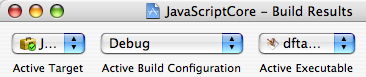
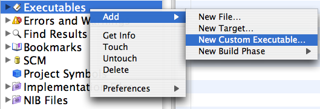

Debugging on Mac OS X
Open a project
Each WebKit component -- JavaScriptCore, WebCore, and WebKit -- contains its own Xcode project. Open the project belonging to the component you want to debug.
Set the project's build products location
To find the WebKit you built, Xcode needs to know the build products location that
build-webkitused. You can set the build products location from the project's Info window.
Set the project's active build configuration
Xcode also needs to know the build configuration you used. You can set the active build configuration from the project's Build window.
Add a custom executable to the project
Choose any WebKit application you want to use for debugging. To use Safari, select /Applications/Safari.app.
Set the project's active executable
You can set the active executable from the project's Build window. Choose the executable you just added.
Close and re-open the project
This will force Xcode to discover generated source files, which output to your build products location, allowing you to set breakpoints in them.
Launch the debugger
In the Debugger window, click the "Debug" button.

See the Xcode Debugging Guide for more information on using Xcode to debug software on Mac OS X.